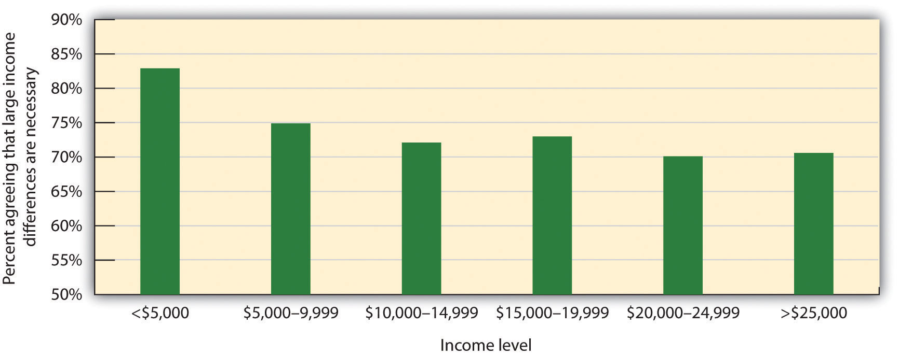

In 2001, the crabbing industry in the Chesapeake Bay was on the verge of collapse. As a result, officials from the states of Maryland and Virginia imposed new regulations on overfishing. The restrictions limited fishing to just 8 hours per day and ended the crab season a month earlier than in the past. The aim of the new regulations was to reduce the crab harvest by 15%, which, in turn, was an attempt to maintain the $150-million-per-year industry.
But many crabbers did not agree that their fishing was responsible for this collapse. They felt that poor water quality had killed off underwater sea grasses that made the natural hiding places for small crabs, leaving them vulnerable to predatory fish. Fisherman Eddie Evans believes that the solution for reviving the crab population was to give out more fishing licenses.
“We've got millions and millions of fish in the bay,” Evans said. “If we could catch more fish it could help the crab population.”
Because the number of bay crabs was declining at a fast pace, though, government officials and conservation groups said there was a need for preventive measures. The U.S. Environmental Protection Agency confirmed the overexploitation of crab stocks and felt there was definite justification for the changes. Bill Goldsborough, a fishery scientist at the Chesapeake Bay Foundation, supports the curb on crab harvests.
“I would say most sincerely that what is being attempted here is a comprehensive effort, a bay-wide effort, that for over two years has utilized the best scientific information in an attempt to improve the fishery,” he said.
But many watermen felt their own needs were being overlooked. The new regulations, they said, would undoubtedly hurt the livelihood of many crabbers.
“The crabbers are going to be hurt and a lot of them will fall by the wayside,” said Larry Simns, president of the Maryland Watermen's Association.
On Smith Island, a small fishing community that is fully dependent on blue crab harvests, waterman Roland Bradshaw says that local incomes could fall by 25 percent as a result of the new regulations.
“This is our livelihood, this is my living. You probably might lose your boat or your home—either one,” Bradshaw said. “They're persecuting us. For the watermen, this is it.”
Source: Stoppkotte, K. (2001, May 10).Chesapeake Bay watermen question limits on crab harvests. National Geographic Today. Retrieved from http://news.nationalgeographic.com/news/2001/05/0510_crabbing.html.
One of the most important themes of this book has been the extent to which the two human motives of self-concern and other-concern guide our everyday behavior. We have seen that although these two underlying goals are in many ways in direct opposition to each other, they nevertheless work together to create successful human outcomes. Particularly important is the fact that we cannot protect and enhance ourselves and those we care about without the help of the people around us. We cannot live alone—we must cooperate, work with, trust, and even provide help to other people in order to survive. The self-concern motive frequently leads us to desire to not do these things because they sometimes come at a cost to the self. And yet in the end, we must create an appropriate balance between self and other.
In this chapter, we revisit this basic topic one more time by considering the roles of self-concern and other-concern in social relationships between people and the social groups they belong to, and among social groups themselves. We will see, perhaps to a greater extent than ever before, how important our relationships with others are and how careful we must be to develop and use these connections. Most important, we will see again that helping others also helps us help ourselves.
Furthermore, in this chapter, we will investigate the broadest level of analysis that we have so far considered—focusing on the cultural and societal level of analysis. In so doing, we will consider how the goals of self-concern and other-concern apply even to large groups of individuals, such as nations, societies, and cultures, and influence how these large groups interact with each other.
Most generally, we can say that when individuals or groups interact they may take either cooperative or competitive positions (De Dreu, 2010; Komorita & Parks, 1994).De Dreu, C. K. W. (2010). Social conflict: The emergence and consequences of struggle and negotiation. In S. T. Fiske, D. T. Gilbert, & G. Lindzey (Eds.), Handbook of social psychology (5th ed., Vol. 2, pp. 983–1023). Hoboken, NJ: John Wiley & Sons; Komorita, S. S., & Parks, C. D. (1994). Social dilemmas. Dubuque, IA: Brown & Benchmark. When we cooperate, the parties involved act in ways that they perceive will benefit both themselves and others. CooperationBehavior that occurs when we trust the people or groups with whom we are interacting and when we expect to profit through interaction with them. is behavior that occurs when we trust the people or groups with whom we are interacting and are willing to communicate and share with the others, expecting to profit ourselves through the increased benefits that can be provided through joint behavior. On the other hand, when we engage in competitionThe attempts by each party to gain as many of the limited rewards as possible and to reduce the likelihood of success for the other parties. we attempt to gain as many of the limited rewards as possible for ourselves, and at the same time we may work to reduce the likelihood of success for the other parties. Although competition is not always harmful, in some cases one or more of the parties may feel that their self-interest has not been adequately met and may attribute the cause of this outcome to another party (Miller, 2001).Miller, D. T. (2001). Disrespect and the experience of injustice. Annual Review of Psychology, 52, 527–553. In these cases of perceived inequity or unfairness, competition may lead to conflictA situation in which it is perceived by the parties involved that gains made by others decrease their own chances of gaining rewards and thus that the desires of the parties are incompatible., in which the parties involved engage in violence and hostility (De Dreu, 2010).De Dreu, C. K. W. (2010). Social conflict: The emergence and consequences of struggle and negotiation. In S. T. Fiske, D. T. Gilbert, & G. Lindzey (Eds.), Handbook of social psychology (5th ed., Vol. 2, pp. 983–1023). Hoboken, NJ: John Wiley & Sons.
Although competition is normal and will always be a part of human existence, cooperation and sharing are too. Although they may generally look out for their own interests, individuals do realize that there are both costs and benefits to always making selfish choices (Kelley & Thibaut, 1978).Kelley, H. H., & Thibaut, J. W. (1978). Interpersonal relations: A theory of interdependence. New York, NY: John Wiley & Sons. Although we might prefer to use as much gasoline as we want, or to buy a couple of new mp3s rather than contribute to the local food bank, at the same time we realize that doing so may have negative consequences for the group as a whole. People have simultaneous goals of cooperating and competing, and the individual must coordinate these goals in making a choice (De Dreu, 2010; Schelling, 1960/1980).De Dreu, C. K. W. (2010). Social conflict: The emergence and consequences of struggle and negotiation. In S. T. Fiske, D. T. Gilbert, & G. Lindzey (Eds.), Handbook of social psychology (5th ed., Vol. 2, pp. 983–1023). Hoboken, NJ: John Wiley & Sons; Schelling, T. (1960/1980). The strategy of conflict. Cambridge, MA: Harvard University Press.
We will also see that human beings, as members of cultures and societies, internalize social norms that promote other-concern, in the form of morality and social fairness norms, and that these norms guide the conduct that allows groups to effectively function and survive (Haidt & Kesebir, 2010).Haidt, J., & Kesebir, S. (2010). Morality. In S. T. Fiske, D. T. Gilbert, & G. Lindzey (Eds.), Handbook of social psychology (5th ed., Vol. 2, pp. 797–832). Hoboken, NJ: John Wiley & Sons. As human beings, we want to do the right thing, and this includes accepting, cooperating, and working with others. And we will do so when we can. However, as in so many other cases, we will also see that the social situation frequently creates a powerful force that makes it difficult to cooperate and easy to compete.
A social dilemmaA situation in which the goals of the individual conflict with the goals of the group. is a situation in which the goals of the individual conflict with the goals of the group (Penner, Dovidio, Piliavin, & Schroeder, 2005; Suleiman, Budescu, Fischer, & Messick, 2004; Van Lange, De Cremer, Van Dijk, & Van Vugt, 2007).Penner, L. A., Dovidio, J. F., Piliavin, J. A., & Schroeder, D. A. (2005). Prosocial behavior: Multilevel perspectives. Annual Review of Psychology, 56, 365–392; Suleiman, R., Budescu, D. V., Fischer, I., & Messick, D. M. (Eds.). (2004). Contemporary psychological research on social dilemmas. New York, NY: Cambridge University Press; Van Lange, P. A. M., De Cremer, D., Van Dijk, E., & Van Vugt, M. (Eds.). (2007). Self-interest and beyond: Basic principles of social interaction. New York, NY: Guilford Press. Social dilemmas impact a variety of important social problems because the dilemma creates a type of trap: Even though an individual or group may want to be cooperative, the situation leads to competitive behavior. For instance, the watermen we considered in the chapter opener find themselves in a social dilemma—they want to continue to harvest as many crabs as they can, and yet if they all do so, the supply will continue to fall, making the situation worse for everyone.
Although social dilemmas create the potential for conflict and even hostility, those outcomes are not inevitable. People usually think that situations of potential conflict are fixed-sum outcomesA situation in which a gain for one side in a conflict necessarily means a loss for the other side or sides., meaning that a gain for one side necessarily means a loss for the other side or sides (Halevy, Chou, & Murnighan, 2011).Halevy, N., Chou, E. Y., & Murnighan, J. K. (2011). Mind games: The mental representation of conflict. Journal of Personality and Social Psychology. Retrieved from http://search.ebscohost.com/login.aspx?direct=true&db=psyh&AN=2011-20586-001&site=ehost-live But this is not always true. In some cases, the outcomes are instead integrative outcomesA potential solution that benefits all the parties involved in a conflict., meaning that a solution can be found that benefits all the parties. In the last section of this chapter, we will consider the ways that we can work to increase cooperation and to reduce competition, discussing some of the contributions that social psychologists have made to help solve some important social dilemmas (Oskamp, 2000a, 2000b).Oskamp, S. (2000a). Psychological contributions to achieving an ecologically sustainable future for humanity. Journal of Social Issues, 56(3), 373–390; Oskamp, S. (2000b). A sustainable future for humanity? How can psychology help? American Psychologist, 55(5), 496–508.
Whether we cooperate or compete is determined, as are most human behaviors, in part by the characteristics of the individuals who are involved in the relationship and in part by the social situation that surrounds them. Let’s begin by considering first the situational determinants of competition and conflict.
Conflict between individuals, between groups, and even between individuals and the social groups they belong to is a common part of our social worlds. We compete with other students to get better grades, and nations fight wars to gain territory and advantage. Businesses engage in competitive practices, sometimes in a very assertive manner, to gain market share. The behaviors of the parties that are in conflict are not necessarily designed to harm the others but rather are the result of the goals of self-enhancement and self-preservation. We compete to gain rewards for ourselves and for those with whom we are connected, and doing so sometimes involves trying to prevent the other parties from being able to gain the limited rewards for themselves.

Successful businessmen help their corporations compete against other companies to gain market share.
Image courtesy of Lori Tingey, http://commons.wikimedia.org/wiki/File:Bill_Gates_at_CES_2007_%28350043329%29.jpg (left). Image courtesy of Jason McELweenie, http://commons.wikimedia.org/wiki/File:Mark_Zuckerberg_-_South_by_Southwest_2008.jpg (right).
Although competition does not necessarily create overt hostility, competition does sow the seeds for potential problems, and thus hostility may not be far off. One problem is that negative feelings tend to escalate when parties are in competition. In these cases, and particularly when the competition is intense, negative behavior on the part of one person or group may be responded to with even more hostile responses on the part of the competing person or group.
In his summer camp studies, Muzafer Sherif and his colleagues (Sherif, Harvey, White, Hood, & Sherif (1961)Sherif, M., Harvey, O. J., White, B. J., Hood, W. R., & Sherif, C. (1961). Intergroup conflict and cooperation: The robbers’ cave experiment. Norman, OK: University of Oklahoma Press. created intergroup competition between the boys in the Rattlers club and the boys in the Eagles club. When the Eagles began by stealing the flag from the Rattlers’ cabin, the Rattlers did not respond merely by stealing a flag in return but rather, replied with even more hostile and negative behaviors. It was as if “getting even” was not enough—an even greater retaliation was called for. Similar escalation happened during the Cold War, when the United States and the Soviet Union continued to increase their nuclear arsenals, and engaging in more and more aggressive and provocative behaviors, each trying to outdo the other. The magnitude of negative behaviors between the parties has a tendency to increase over time. As the conflict continues, each group perceives the other group more negatively, and these perceptions make it more difficult for the escalating conflict to be reversed.
This escalation in negative perceptions between groups that are in conflict occurs in part because conflict leads the groups to develop increasingly strong social identities. These increases in identity are accompanied by the development of even more hostile group norms, which are supported by the group members and their leaders and which sanction or encourage even more negative behaviors toward the outgroup. Conflict also leads to negative stereotypes of the outgroup, increases perceptions of the other groups as homogenous, and potentially even produces deindividuation and dehumanization of the outgroup (Staub, 2011).Staub, E. (2011). Overcoming evil: Genocide, violent conflict and terrorism. New York, NY: Oxford University Press. The conflict also reduces the amount of interaction among members of the competing groups, which makes it more difficult to change the negative perceptions. The unfortunate outcome of such events is that initially small conflicts may become increasingly hostile until they get out of control. World wars have begun with relatively small encroachments, and duels to the death have been fought over small insults.
Conflict is sometimes realistic, in the sense that the goals of the interacting parties really are incompatible and fixed-sum. At a football game, for instance, only one team can win. And in a business world, there is a limited market share for a product. If one business does better by gaining more customers, then the other competing businesses may well do worse because there are fewer customers left for them. Realistic group conflictA situation in which groups are in actual competition for scarce resources. occurs when groups are in competition for objectively scarce resources, such as when two sports teams are vying for a league championship or when the members of different ethnic groups are attempting to find employment in the same factory in a city (Brewer & Campbell, 1976; Jackson, 1993).Brewer, M. B., & Campbell, D. T. (1976). Ethnocentrism and intergroup attitudes: East African evidence. New York, NY: Sage; Jackson, J. W. (1993). Realistic group conflict theory: A review and evaluation of the theoretical and empirical literature. The Psychological Record, 43(3), 395–413. Conflict results in these conditions because it is easy (and accurate) to blame the difficulties of one’s own group on the competition produced by the other group or groups.
Although many situations do create real conflict, some conflicts are more perceived than realistic because (although they may have a core of realistic conflict) they are based on misperceptions of the intentions of others or the nature of the potential rewards. In some cases, although the situation is perceived as conflicting, the benefits gained for one party do not necessarily mean a loss for the other party (the outcomes are actually integrative). For instance, when different supply businesses are working together on a project, each may prefer to supply more, rather than less, of the needed materials. However, the project may be so large that none of the businesses can alone meet the demands. In a case such as this, a compromise is perhaps possible such that the businesses may be able to work together, with each company supplying the products on which it makes a larger profit, therefore satisfying the needs of all the businesses. In this case, the parties may be better off working together than working on their own.
Some conflict is realistic, in the sense that the parties are in dispute over limited resources such as land. But many conflicts may have an integrative solution, such that all parties can gain benefits through cooperation.
Although intergroup relationships that involve hostility or violence are obviously to be avoided, it must be remembered that competition or conflict is not always negative or problematic (Coser, 1956; Rispens & Jehn, 2011).Coser, L. A. (1956). The functions of social conflict. Glencoe, IL: The Free Press; Rispens, S., & Jehn, K. A. (2011). Conflict in workgroups: Constructive, destructive, and asymmetric conflict. In D. De Cremer, R. van Dick, & J. K. Murnighan (Eds.), Social psychology and organizations (pp. 185–209). New York, NY: Routledge/Taylor & Francis Group. The Darwinian idea of “survival of the fittest” proposes that evolutionary progress occurs precisely because of the continued conflict among individuals within species and between different species as competing social groups. Over time, this competition, rather than being entirely harmful, increases diversity and the ability to adapt to changing environments.
Competition between social groups may also provide social comparison information, which can lead both groups to set higher standards and motivate them to greater achievement. And conflict produces increased social identity within each of the competing groups. For instance, in the summer camp study, Sherif noted that the boys in the Rattlers and the Eagles developed greater liking for the other members of their own group as well as a greater group identity as the competition between the two groups increased. In situations in which one nation is facing the threat of war with another nation, the resulting identity can be useful in combating the threat, for instance, by mobilizing the citizens to work together effectively and to make sacrifices for the country.
Although competition is always a possibility, our concern for others leads most relationships among individuals and among groups to be more benign and favorable. Most people get along with others and generally work together in ways that promote liking, sharing, and cooperation. In these situations, the interacting parties perceive that the gains made by others also improve their own chances of gaining rewards and that their goals are compatible. The parties perceive the situation as integrative and desire to cooperate. The players on a baseball team, for instance, may cooperate with each other—the better any one of them does, the better the team as a whole does. And in cooperative situations, it may in some cases even be beneficial to accept some personal costs (such as bunting a player on first base to second base, even though it means an out for the self) in order to further the goals of the group (by placing the other player in scoring position, thereby benefiting the team).
Because cooperation is evolutionarily useful for human beings, social norms that help us cooperate have become part of human nature. These norms include principles of morality and social fairness.
As we have seen in many places in this book, helping others is part of our human nature. And cooperation and helping are found in other animals as well as in humans. For instance, it has been observed that the highest-status chimpanzees in a group do not act selfishly all the time—rather, they typically share food with others and help those who seem to be in need (de Waal, 1996).de Waal, F. (1996). Good natured: The evolution of right and wrong in humans and other animals. Cambridge, MA: Harvard University Press. As humans, our desires to cooperate are guided in part by a set of social norms about morality that forms a basic and important part of our culture. All cultures have morality beliefsThe set of social norms that describe the principles and ideals, as well as the duties and obligations, that we view as appropriate and that we use to judge the actions of others.—the set of social norms that describe the principles and ideals, as well as the duties and obligations, that we view as appropriate and that we use to judge the actions of others and to guide our own behavior (Darley & Shultz, 1990; Haidt & Kesebir, 2010).Darley, J. M., & Shultz, T. R. (1990). Moral rules: Their content and acquisition. Annual Review of Psychology, 41(4), 525–556; Haidt, J., & Kesebir, S. (2010). Morality. In S. T. Fiske, D. T. Gilbert, & G. Lindzey (Eds.), Handbook of social psychology (5th ed., Vol. 2, pp. 797–832). Hoboken, NJ: John Wiley & Sons.
Researchers have identified two fundamental types of morality—social conventional morality and harm-based morality (Turiel, Killen, & Helwig, 1987).Turiel, E., Killen, M., & Helwig, C. (1987). Morality: Its structure, functions and vagaries. In J. Kagan & S. Lamb (Eds.), The emergence of morality in young children (pp. 55–243). Chicago, IL: University of Chicago Press. Social conventional moralityNorms that are seen as appropriate within a culture but that do not involve behaviors that relate to doing good or doing harm toward others. refers to norms that are seen as appropriate within a culture but that do not involve behaviors that relate to doing good or doing harm toward others. There is a great deal of cultural variation in social conventional morality, and these norms relate to a wide variety of behaviors. Some cultures approve of polygamy and homosexuality, whereas others do not. In some cultures, it is appropriate for men and women to be held to different standards, whereas in other cultures, this is seen as wrong. Even things that seem completely normal to us in the West, such as dancing, eating beef, and allowing men to cook meals for women, are seen in other cultures as immoral.
If these conventions, as well as the fact that they are part of the moral code in these cultures, seem strange to you, rest assured that some of your own conventional beliefs probably seem just as strange to other cultures. Social conventions are in large part arbitrary and are determined by cultures themselves. Furthermore, social conventions change over time. Not so long ago in the United States, it was wrong for Blacks and Whites to marry, and yet that convention has now changed for the better. And soon it seems as if many states will fully accept gay marriages, a policy that seemed unheard of even a few years ago.
On the other hand, some of the most important and fundamental moral principles seem to be universally held by all people in all cultures and do not change over time. It has been found that starting at about age 10, children in most cultures come to a belief about harm-based moralityThe principle that harming others, either physically or by violating their rights, is morally wrong.—that harming others, either physically or by violating their rights, is wrong (Helwig & Turiel, 2002).Helwig, C. C., & Turiel, E. (Eds.). (2002). Children’s social and moral reasoning. Malden, MA: Blackwell Publishing. These fundamental and universal principles of morality involve rights, freedom, equality, and cooperation, and virtually all cultures have a form of the golden rule, which proscribes how we should treat other people (as we would have them treat us).
Morals are held and agreed to by all members of the culture. In most cases, morals are upheld through rules, laws, and other types of sanctions for their transgression. We give rewards to people who express our preferred morality, for instance, in the form of prizes, honors, and awards, and we punish those who violate our moral standards.
Morality has both a cognitive and an emotional component. Some judgments just feel wrong, even if we cannot put our finger on exactly why that is. For instance, I think you’d probably agree that it is morally wrong to kiss your sister or brother on the lips, although at a cognitive level, it’s difficult to say exactly why it’s wrong. Is it wrong to kill someone if doing so saves lives? Most people agree that they should flip the switch to kill the single individual in the following scenario:
A runaway trolley is headed for five people who will all be killed. The only way to save them is to hit a switch that will turn the trolley onto a different track where it will kill one person instead of five.
And yet even when morality seems cognitive, our emotions come into play. Although most people agree that the decision to kill the one person is rational, they would have a hard time actually doing it—harm-based morality tells us we should not kill.
An essential part of morality involves determining what is “right” or “fair” in social interaction. We want things to be fair, we try to be fair ourselves, and we react negatively when we see things that are unfair. And we determine what is or is not fair by relying on another set of social norms, appropriately called social fairness normsBeliefs about how people should be treated fairly., which are beliefs about how people should be treated fairly (Tyler & Lind, 2001; Tyler & Smith, 1998).Tyler, T. R., & Lind, E. A. (2001). Procedural justice. In J. Sanders & V. L. Hamilton (Eds.), Handbook of justice research in law (pp. 65–92). Dordrecht, Netherlands: Kluwer Academic Publishers; Tyler, T. R., & Smith, H. J. (1998). Social justice and social movements. In D. T. Gilbert, S. T. Fiske, & G. Lindzey (Eds.), The handbook of social psychology (4th ed., Vols. 1 and 2, pp. 595–629). New York, NY: McGraw-Hill.
The preference for fairness has been proposed to be a basic human impulse (Tyler & Blader, 2000),Tyler, T. R., & Blader, S. (2000). Cooperation in groups: Procedural justice, social identity, and behavioral engagement. New York, NY: Psychology Press. and when we perceive unfairness, we also experience negative emotional responses in brain regions associated with reward and punishment (Tabibnia, Satpute, & Lieberman, 2008).Tabibnia, G., Satpute, A. B., & Lieberman, M. D. (2008). The sunny side of fairness: Preference for fairness activates reward circuitry (and disregarding unfairness activates self-control circuitry). Psychological Science, 19(4), 339–347. doi: 10.1111/j.1467–9280.2008.02091.x The experience of unfairness is associated with negative emotions, including anger and contempt, whereas fairness is associated with positive emotions.
One type of social fairness, known as distributive fairnessJudgments about whether or not a party is receiving a fair share of the available rewards., refers to our judgments about whether or not a party is receiving a fair share of the available rewards. Distributive fairness is based on our perceptions of equity—the belief that we should each receive for our work a share proportionate to our contributions. If you and I work equally hard on a project, we should get the same grade on it. But if I work harder than you do, then I should get a better grade. Things seem fair and just when we see that these balances are occurring, but they seem unfair and unjust when they do not seem to be.
A second type of fairness doesn’t involve the outcomes of the work itself but rather our perceptions of the methods used to assign those outcomes. Procedural fairnessBeliefs about the fairness (or unfairness) of the procedures used to distribute available rewards among parties. refers to beliefs about the fairness (or unfairness) of the procedures used to distribute available rewards among parties (Schroeder, Steele, Woodell, & Bernbenek, 2003).Schroeder, D. A., Steele, J. E., Woodell, A. J., & Bernbenek, A. F. (2003). Justice in social dilemmas. Personality and Social Psychology Review, 7, 374–387. Procedural fairness is important because in some cases we may not know what the outcomes are, but we may nevertheless feel that things are fair because we believe that the process used to determine the outcomes is fair. For instance, we may not know how much tax other people are paying, but we feel that the system itself is fair, and thus most of us endorse the idea of paying taxes (indeed, almost everyone in the United States pays their taxes). We do so not only out of respect for the laws that require us to but also because the procedure seems right and proper, part of the social structure of our society.
We believe in the importance of fairness in part because if we did not, then we would be forced to accept the fact that life is unpredictable and that negative things can occur to us at any time. Believing in fairness allows us to feel better because we can believe that we get what we deserve and deserve what we get. These beliefs allow us to maintain control over our worlds. To believe that those who work hard are not rewarded and that accidents happen to good people forces us to concede that we too are vulnerable.
Because we believe so strongly in fairness, and yet the world is not always just, we may distort our perceptions of the world to allow us to see it as more fair than it really is. One way to create a “just world” is to reinterpret behaviors and outcomes so that the events seem to be fair. Indeed Melvin Lerner and his colleagues (Lerner, 1980)Lerner, M. J. (1980). The belief in a just world: A fundamental delusion. New York, NY: Plenum. found one way that people do this is by blaming the victimInterpreting the negative outcomes that occur to others internally so that it seems that they deserved them.: Interpreting the negative outcomes that occur to others internally so that it seems that they deserved them. When we see that bad things have happened to other people, we tend to blame the people for them, even if they are not at fault. Thus we may believe that poor people deserve to be poor because they are lazy, that crime victims deserve to be victims because they were careless, and that people with AIDS deserve their illness. In fact, the more threatened we feel by an apparent unfairness, the greater is our need to protect ourselves from the dreadful implication that it could happen to us, and the more we disparage the victim.
Although everyone believes that things should be fair, doing so is a lot easier for those of us for whom things have worked out well. If we have high status, we will generally be content with our analysis of the situation because it indicates that we deserve what we got. We are likely to think, “I must have a good education, a good job, and plenty of money because I worked hard for it and deserve it.” In these cases, the reality supports our desires for self-concern, and there is no psychological dilemma posed. On the other hand, people with low status must reconcile their low status with their perceptions of fairness.
Although they do not necessarily feel good about it, individuals who have low status may nevertheless accept the existing status hierarchy, deciding that they deserve what little they have. This is particularly likely if these low-status individuals accept the procedural fairness of the system. People who believe that the system is fair and that the members of higher-status groups are trustworthy and respectful frequently accept their position, even if it is one of low status (Tyler, Degoey, & Smith, 1996).Tyler, T., Degoey, P., & Smith, H. (1996). Understanding why the justice of group procedures matters: A test of the psychological dynamics of the group-value model. Journal of Personality and Social Psychology, 70(5), 913–930. In all societies, some individuals have lower status than others, and the members of low-status groups may perceive that these differences because they are an essential part of the society, are acceptable. The acceptance of one’s own low status as part of the proper and normal functioning of society is known as false consciousnessThe acceptance of one’s own low status as part of the proper and normal functioning of society. (Jost & Banaji, 1994; Major, 1994).Jost, J. T., & Banaji, M. R. (1994). The role of stereotyping in system-justification and the production of false consciousness. British Journal of Social Psychology, 33, 1–27; Major, B. (1994). From social inequality to personal entitlement: The role of social comparisons, legitimacy appraisals, and group membership. Advances in Experimental Social Psychology, 26, 293–348. In fact, people who have lower social status and who thus should be most likely to reject the existing status hierarchy are often the most accepting of it (Jost, Pelham, Sheldon, & Sullivan, 2003).Jost, J. T., Pelham, B. W., Sheldon, O., & Sullivan, B. N. (2003). Social inequality and the reduction of ideological dissonance on behalf of the system: Evidence of enhanced system justification among the disadvantaged. European Journal of Social Psychology, 33(1), 13–36.
But what about people who have not succeeded, who have low social status, and yet who also do not accept the procedural fairness of the system? How do they respond to the situation that seems so unfair? One approach is to try to gain status, for instance, by leaving the low-status group to which they currently belong. Individuals who attempt to improve their social status by moving to a new, higher-status group must give up their social identity with the original group and then increasingly direct their communication and behavior toward the higher-status groups in the hope of being able to join them.
Although it represents the most direct method of change, leaving one group for another is not always desirable for the individual or effective if it is attempted. For one, if individuals are already highly identified with the low-status group, they may not wish to leave it despite the fact that it is low status. Doing so would sacrifice an important social identity, and it may be difficult to generate a new one with the new group (Ellemers, Spears, & Doosje, 1997; Spears, Doosje, & Ellemers, 1997).Ellemers, N., Spears, R., & Doosje, B. (1997). Sticking together or falling apart: In-group identification as a psychological determinant of group commitment versus individual mobility. Journal of Personality and Social Psychology, 72, 617–626; Spears, R., Doosje, B., & Ellemers, N. (1997). Self-stereotyping in the face of threats to group status and distinctiveness: The role of group identification. Personality and Social Psychology Bulletin, 23, 538–553. In addition, an attempt to leave the group is a likely response to low status only if the person perceives that the change is possible. In some situations, group memberships are constrained by physical appearance (such as when the low status is a result of one’s race or ethnicity) or cultural norms (such as in a caste system in which change is not allowed by social custom). And there may also be individual constraints on the possibility of mobility—if the individual feels that he or she does not have the skills or ability to make the move, he or she may be unlikely to attempt doing so.
When it does not seem possible to leave one’s low-status group, the individual may decide instead to use a social creativity strategy. Social creativityThe use of strategies that allow members of low-status groups to perceive their group as better than other groups. refers to the use of strategies that allow members of low-status groups to perceive their group as better than other groups, at least on some dimensions, which allows them to gain some positive social identity (Derks, van Laar, & Ellemers, 2007).Derks, B., van Laar, C., & Ellemers, N. (2007). Social creativity strikes back: Improving motivated performance of low status group members by valuing ingroup dimensions. European Journal of Social Psychology, 37(3), 490–493. doi: 10.1002/ejsp.375 In the United States, for example, Blacks, who are frequently the target of negative stereotypes, prejudices, and discrimination, may react to these negative outcomes by focusing on more positive aspects of their group membership. The idea is that their cultural background becomes a positive, rather than a negative, aspect of their personality—“Black is Beautiful!” is one example.
Social creativity frequently takes the form of finding alternative characteristics that help the group excel. For example, the students at a college that does not have a particularly good academic standing may look to the superior performance of their sports teams as a way of creating positive self-perceptions and social identity. Although the sports team performance may be a less important dimension than academic performance overall, it does provide at least some positive feelings. Alternatively, the members of the low-status group might regain identity by perceiving their group as very cohesive or homogenous, emphasizing group strength as a positive characteristic.
When individual mobility is not possible, group members may consider mobilizing their group using collective action. Collective actionAttempts on the part of one group to change the social status hierarchy by improving the status of their own group relative to others. refers to the attempts on the part of one group to change the social status hierarchy by improving the status of their own group relative to others. This might occur through peaceful methods, such as lobbying for new laws requiring more equal opportunity or for affirmative action programs, or it may involve resorts to violence, such as the 1960s race riots in the United States or the recent uprisings in Middle Eastern countries (Ellemers & Barreto, 2009; Leonard, Moons, Mackie, & Smith, 2011; Levine, Taylor, & Best, 2011).Ellemers, N., & Barreto, M. (2009). Collective action in modern times: How modern expressions of prejudice prevent collective action. Journal of Social Issues, 65(4), 749–768. doi: 10.1111/j.1540–4560.2009.01621.x; Leonard, D. J., Moons, W. G., Mackie, D. M., & Smith, E. R. (2011). “We’re mad as hell and we’re not going to take it anymore”: Anger self-stereotyping and collective action. Group Processes and Intergroup Relations, 14(1), 99–111. doi: 10.1177/1368430210373779; Levine, M., Taylor, P. J., & Best, R. (2011). Third parties, violence, and conflict resolution: The role of group size and collective action in the microregulation of violence. Psychological Science, 22(3), 406–412. doi: 10.1177/0956797611398495
Collective action is more likely to occur when there is a perception on the part of the group that their low status is undeserved and caused by the actions of the higher-status group, when communication among the people in the low-status group allows them to coordinate their efforts, and when there is strong leadership to help define an ideology, organize the group, and formulate a program for action. Taking part in collective action—for instance, by joining feminist, or civil rights, or the “Occupy Wall Street” movements in the United States—is a method of maintaining and increasing one’s group identity and attempting to change the current social structure.
System Justification
We have argued throughout this book that people have a strong desire to feel good about themselves and the people they care about, and we have seen much evidence to support this idea. Most people believe that they and their own groups are important, valued, competent, and generally “better than average.” And most people endorse social policies that favor themselves and the groups to which they belong (Bobo, 1983; Sidanius & Pratto, 1999).Bobo, L. (1983). Whites’ opposition to busing: Symbolic racism or realistic group conflict? Journal of Personality and Social Psychology, 45, 1196–1210; Sidanius, J., & Pratto, F. (1999). Social dominance: An intergroup theory of social hierarchy and oppression. New York, NY: Cambridge University Press.
If this is the case, then why do people who are of lower socioeconomic status so often support political policies that tax the poor more highly than they tax the rich and that support unequal income distributions that do not favor them? In short, why do people engage in system justification, even when the current state of affairs does not benefit them personally? Social psychologists have provided a number of potential explanations for this puzzling phenomenon.
One factor is that our perceptions of fairness or unfairness are not based on our objective position within the society but rather are more based on our comparison of our own status relative to the other people around us. For instance, poor people in the United States may not perceive that they have lower status because they compare their current state of affairs not with rich people but with the people who they are most likely to see every day—other poor people.
This explanation is supported by the fact that factors that increase the likelihood that lower-status individuals will compare themselves with higher-status people tend to reduce system justification beliefs, decrease life satisfaction, and lead to collective action. For instance, the civil rights riots of the 1960s occurred after Blacks had made many gains in the United States. At this time, they may have tended to reject the existing status system because they began to compare themselves with higher-status Whites rather than with other low-status Blacks, and this upward comparison made their relatively lower status seem more illegitimate and unfair (Gurr, 1970).Gurr, T. (1970). Why men rebel. Princeton, NJ: Princeton University Press.
A second explanation is based on the principles of procedural fairness. Our perceptions of fairness and our satisfaction with our own lives are determined in large part by the culture in which we live. In the United States, the culture provides a strong belief in fairness. Most people believe in the procedural fairness of the system itself and thus are willing to believe that systems and authorities are correct and proper and that inequality among groups and individuals is legitimate and even necessary. Furthermore, because believing otherwise would be highly threatening to the self-concept, poor people may be even more likely to believe in the correctness of these inequalities than are those of higher status (Jost, 2011; van der Toorn, Tyler, & Jost, 2011).Jost, J. T. (2011). System justification theory as compliment, complement, and corrective to theories of social identification and social dominance. In D. Dunning (Ed.), Social motivation (pp. 223–263). New York, NY: Psychology Press; van der Toorn, J., Tyler, T. R., & Jost, J. T. (2011). More than fair: Outcome dependence, system justification, and the perceived legitimacy of authority figures. Journal of Experimental Social Psychology, 47(1), 127–138. doi: 10.1016/j.jesp.2010.09.003
To test this hypothesis, John Jost and his colleagues (Jost, Pelham, Sheldon, & Sullivan, 2003)Jost, J. T., Pelham, B. W., Sheldon, O., & Sullivan, B. N. (2003). Social inequality and the reduction of ideological dissonance on behalf of the system: Evidence of enhanced system justification among the disadvantaged. European Journal of Social Psychology, 33(1), 13–36. asked over 2,500 U.S. citizens the following question:
Some people earn a lot of money while others do not earn very much at all. In order to get people to work hard, do you think large differences in pay are
As predicted by the idea that to believe otherwise is to accept that the social situation is unfair, Jost et al. found that poorer people were significantly more likely to think that large differences in pay were necessary and proper (responding “absolutely necessary” or “probably necessary”) than did wealthier people (see the following figure). You can see that social psychological principles—in this case, the idea of system justification—can be used to explain what otherwise would seem to be quite unexpected phenomena.
Figure 13.1
Poorer respondents reported finding the income differential between rich and poor more acceptable than did richer participants. Data are from Jost, Pelham, Sheldon, and Sullivan (2003).Jost, J. T., Pelham, B. W., Sheldon, O., & Sullivan, B. N. (2003). Social inequality and the reduction of ideological dissonance on behalf of the system: Evidence of enhanced system justification among the disadvantaged. European Journal of Social Psychology, 33(1), 13–36.
If human beings are well-equipped to cooperate with each other, and if morality, social fairness, and other human features favor it, why are so many social relationships still competitive? If you guessed that the competition comes not so much from the people as it does from the nature of the social situation, then you would be correct. In short, competition is often caused by the social dilemma itself—the dilemma creates patterns whereby even when we want to be good, the situation nevertheless rewards us for being selfish. Ross and Ward (1995)Ross, L., & Ward, A. (1995). Psychological barriers to dispute resolution. Advances in experimental social psychology, 27, 255–304. Retrieved from http://search.ebscohost.com/login.aspx?direct=true&db=psyh&AN=2003-02325-006&site=ehost-live found that participants played a game more competitively when it was described as a “Wall Street Broker Game” than when the same game was called a “Community Game.” And other studies have found that subliminal priming of money or business materials (e.g., boardroom tables and business suits) increases competition (Kay, Wheeler, Bargh, & Ross, 2004; Vohs, Meed, & Goode, 2006).Kay, A. C., Wheeler, S. C., Bargh, J. A., & Ross, L. (2004). Material priming: The influence of mundane physical objects on situational construal and competitive behavioral choice. Organizational Behavior and Human Decision Processes, 95(1), 83–96. doi: 10.1016/j.obhdp.2004.06.003; Vohs, K. D., Mead, N. L., & Goode, M. R. (2006). The psychological consequences of money. Science, 314(5802), 1154–1156. doi: 10.1126/science.1132491
Social dilemmas occur when the members of a group, culture, or society are in potential conflict over the creation and use of shared public goods. Public goodsA benefit that is shared by a community at large and that everyone in the group has access to, regardless of whether or not they have personally contributed to the creation of the good. are benefits that are shared by a community at large and that everyone in the group has access to, regardless of whether or not they have personally contributed to the creation of the goods (Abele, Stasser, & Chartier, 2010).Abele, S., Stasser, G., & Chartier, C. (2010). Conflict and coordination in the provision of public goods: A conceptual analysis of continuous and step-level games. Personality and Social Psychology Review, 14(4), 385–401. doi: 10.1177/1088868310368535 In many cases, the public good involves the responsible use of a resource that if used wisely by the group as a whole will remain intact but if overused will be destroyed. Examples include the crabs in the Chesapeake Bay, water in local reservoirs, public beaches, and clean air. In other cases, the public good involves a service—such as public television or public radio—that is supported by the members of the community but that is used freely by everyone in the community.
Let’s consider first a case in which a social dilemma leads people to overuse an existing public good—a type of social dilemma called a harvesting dilemmaA social dilemma that leads people to overuse an existing public good.. One example, called the commons dilemma, was proposed by Garrett Hardin (1968).Hardin, G. (1968). The tragedy of the commons. Science, 162(3859), 1243–1248. Hardin noted that in many towns in Europe, there was at one time a centrally located pasture, known as the commons, which was shared by the inhabitants of the village to graze their livestock. But the commons was not always used wisely. The problem was that each individual who owned livestock wanted to be able to use the commons to graze his or her own animals. However, when each group member took advantage of the commons by grazing many animals, the commons became overgrazed, the pasture died, and the commons was destroyed.
Although Hardin focused on the particular example of the commons, he noted that the basic dilemma of individual needs and desires versus the benefit of the group as whole could also be found in many contemporary public goods issues, including the use of limited natural resources and public land. In large cities, most people may prefer the convenience of driving their own car to work each day rather than taking public transportation. Yet this behavior uses up public goods (roads that are not clogged with traffic, and air that is free of pollution). People are lured into the dilemma by short-term self-interest, seemingly without considering the potential long-term costs of the behavior, such as air pollution and the necessity of building even more highways.
Social dilemmas such as the commons dilemma are arranged in a way that it is easy to be selfish because the personally beneficial choice (such as using water during a water shortage or driving to work alone in one’s own car) produces benefits for the individual, no matter what others do. Furthermore, social dilemmas tend to work on a type of “time delay.” Because the long-term negative outcome (the extinction of fish species or dramatic changes in the climate) is far away in the future, and yet the individual benefits are occurring right now, it is difficult to see how many costs there really are. The paradox, of course, is that if everyone takes the personally selfish choice in an attempt to maximize his or her own rewards, the long-term result is poorer outcomes for every individual in the group. Each individual prefers to make use of the public goods for himself or herself, whereas the best outcome for the group as a whole is to use the resources more slowly and wisely.
Another type of social dilemma—the contributions dilemmaA social dilemma that occurs when the short-term costs of a behavior lead individuals to avoid performing it, which may prevent the long-term benefits that would have occurred if the behaviors had been performed.—occurs when the short-term costs of a behavior lead individuals to avoid performing it, and this may prevent the long-term benefits that would have occurred if the behaviors had been performed. An example of a contributions dilemma occurs when individuals have to determine whether or not to donate to the local public radio or television station. If most people do not contribute, the TV station may have lower quality programming, or even go off the air entirely, thus producing a negative outcome for the group as a whole. However, if enough people already contribute, then it is not in anyone’s own best interest to do so, because the others will pay for the programming for them. Contributions dilemmas thus encourage people to free ride, relying on other group members to contribute for them.
One method of understanding how individuals and groups behave in social dilemmas is to create such situations in the laboratory and observe how people react to them. The best known of these laboratory simulations is called the prisoner’s dilemma game (Poundstone, 1992).Poundstone, W. (1992). Prisoner’s dilemma. New York, NY: Doubleday. The prisoner’s dilemma gameA laboratory simulation that models a social dilemma in which the goals of the individual compete with the goals of another individual (or sometimes with a group of other individuals). is a laboratory simulation that models a social dilemma in which the goals of the individual compete with the goals of another individual (or sometimes with a group of other individuals). Like all social dilemmas, the prisoner’s dilemma makes use of the assumptions of social learning approaches to behavior that assume that individuals will try to maximize their own outcomes in their interactions with others.
In the prisoner’s dilemma, the participants are shown a payoff matrix in which numbers are used to express the potential outcomes for the each of the players in the game, given the decisions made by each player. The payoffs are chosen beforehand by the experimenter to create a situation that models some real-world outcome. Furthermore, in the prisoner’s dilemma, the payoffs are normally arranged as they would be in a typical social dilemma, such that each individual is better off acting in his or her immediate self-interest, and yet if all individuals act according to their self-interest, then everyone will be worse off.
In its original form, the prisoner’s dilemma involves a situation in which two prisoners (we’ll call them Frank and Malik) have been accused of committing a crime. The police have determined that the two worked together on the crime, but they have only been able to gather enough evidence to convict each of them of a more minor offense. In an attempt to gain more evidence and thus to be able to convict the prisoners of the larger crime, each prisoner is interrogated individually, with the hope that he will confess to having been involved in the more major crime in return for a promise of a reduced sentence if he confesses first. Each prisoner can make either the cooperative choice (which is to not confess) or the competitive choice (which is to confess).
The incentives for either confessing or not confessing are expressed in a payoff matrix such as the one shown in Figure 13.2 "The Prisoner’s Dilemma". The top of the matrix represents the two choices that Malik might make (either to confess that he did the crime or to not confess), and the side of the matrix represents the two choices that Frank might make (also to either confess or not confess). The payoffs that each prisoner receives, given the choices of each of the two prisoners, are shown in each of the four squares.
Figure 13.2 The Prisoner’s Dilemma

In the prisoner’s dilemma, two suspected criminals are interrogated separately. The payoff matrix indicates the outcomes for each prisoner, measured as the number of years each is sentenced to prison, as a result of each combination of cooperative (don’t confess) and competitive (confess) decisions. Outcomes for Malik are in the darker color, and outcomes for Frank are in lighter color.
If both prisoners take the cooperative choice by not confessing (the situation represented in the upper left square of the matrix), there will be a trial, the limited available information will be used to convict each prisoner, and each will be sentenced to a short prison term of 3 years. However, if either of the prisoners confesses, turning “state’s evidence” against the other prisoner, then there will be enough information to convict the other prisoner of the larger crime, and that prisoner will receive a sentence of 30 years, whereas the prisoner who confesses will get off free. These outcomes are represented in the lower left and upper right squares of the matrix. Finally, it is possible that both players confess at the same time. In this case, there is no need for a trial, and in return, the prosecutors offer a somewhat reduced sentence (of 10 years) to each of the prisoners.
The prisoner’s dilemma has two interesting characteristics that make it a useful model of a social dilemma. For one, the prisoner’s dilemma is arranged such that a positive outcome for one player does not necessarily mean a negative outcome for the other player (i.e., the prisoner’s dilemma is not a fixed-sum situation but an integrative one). If you consider again the matrix in Figure 13.2 "The Prisoner’s Dilemma", you can see that if one player takes the cooperative choice (to not confess) and the other takes the competitive choice (to confess), then the prisoner who cooperates loses, whereas the other prisoner wins. However, if both prisoners make the cooperative choice, each remaining quiet, then neither gains more than the other, and both prisoners receive a relatively light sentence. In this sense, both players can win at the same time.
Second, the prisoner’s dilemma matrix is arranged such that each individual player is motivated to take the competitive choice because this choice leads to a higher payoff regardless of what the other player does. Imagine for a moment that you are Malik, and you are trying to decide whether to cooperate (don’t confess) or to compete (confess). And imagine that you are not really sure what Frank is going to do. Remember that the goal of the individual is to maximize rewards. The values in the matrix make it clear that if you think that Frank is going to confess, you should confess yourself (to get 10 rather than 30 years in prison). And it is also clear that if you think Frank is not going to confess, you should still confess (to get 0 rather than 3 years in prison). So the matrix is arranged such that the “best” alternative for each player, at least in the sense of pure self-interest, is to make the competitive choice, even though in the end both players would prefer the combination in which both players cooperate to the one in which they both compete.
Although initially specified in terms of the two prisoners, similar payoff matrices can be used to predict behavior in many different types of dilemmas involving two or more parties and including choices between helping and not helping, working and loafing, and paying and not paying debts (weber & Messick, 2004).weber, J. M., & Messick, D. M. (2004). Conflicting interests in social life: Understanding social dilemma dynamics. In M. J. Gelfand & J. M. Brett (Eds.), The handbook of negotiation and culture (pp. 374–394). Palo Alto, CA: Stanford University Press. For instance, we can use the prisoner’s dilemma to help us understand a contributions dilemma, such as why two roommates might not want to contribute to the housework. Each of them would be better off if they relied upon the other to clean the house. Yet if neither of them makes an effort to clean the house (the cooperative choice), the house becomes a mess and they will both be worse off.
In many cases, the prisoner’s dilemma game is played over a series of trials, in which players can modify their responses based on those given by their partners on previous trials. For example, the arms race between the Soviet Union and the United States during the Cold War can be seen as a social dilemma that occurs over time. Over a period of years, each country chooses whether to compete (by building nuclear weapons) or to cooperate (by not building nuclear weapons). And in each case, both countries feel that it is in their best interest to compete rather than cooperate.
The prisoner’s dilemma can also be expanded to be played by more than two players. The behavior of individuals leaving a crowed parking lot, as an example, represents a type of prisoner’s dilemma in which it is to each person’s individual benefit to try to be the first to leave. However, if each person rushes to the exit without regard for others, a traffic jam is more likely to result, which slows down the process for everyone. If all individuals take the cooperative choice—waiting until their turn—everyone wins.
In addition to the prisoner’s dilemma, social dilemmas have been studied using games in which a group of individuals share a common pool of resources. In these resource dilemma games, the participants may extract or harvest resources from the pool, and it is to their individual advantage to do so. Furthermore, as the resources are used, the pool can replenish itself through a fixed schedule, which will allow the individuals to continue to harvest over long periods of time. Optimal use of the resource involves keeping the pool level up and harvesting only as much as will be replenished in the given time period. Overuse of the pool provides immediate gain for the individuals but has a long-term cost in the inability to make harvests at a later time.
In one version of a resource dilemma game (Edney, 1979),Edney, J. J. (1979). The nuts game: A concise commons dilemma analog. Environmental Psychology and Nonverbal Behavior, 3(4), 252–254. the participants sit around a bowl of metal nuts, and the goal is to get as many nuts as one can. The experimenter adds nuts to the bowl such that the number of nuts in the bowl doubles every 10 seconds. However, the individual players are also motivated to harvest nuts for themselves and are allowed to take out as many nuts as they like at any time. In Edney’s research, rather than cooperating and watching the pool grow, the participants almost immediately acted in their self-interest, grabbing the nuts from the bowl. In fact, Edney reported that 65% of the groups never got to the first 10-second replenishment!
The Trucking Game
Another example of a laboratory simulation that has been used to study conflict is the trucking game. In the original research (Deutsch & Krauss, 1960),Deutsch, M., & Krauss, R. M. (1960). The effect of threat upon interpersonal bargaining. Journal of Abnormal and Social Psychology, 61, 181–189. pairs of women played the trucking game. Each woman was given $4 to begin with and was asked to imagine herself as the owner of one of two trucking companies (Acme or Bolt) that carried merchandise over the roads shown in the figure called “The Road Map From the Trucking Game”. Each time either player’s truck reached the destination on the opposite side of the board, she earned 60 cents, minus operating costs (1 cent for each second taken by the trip). However, the game was also arranged to create the potential for conflict. Each participant wanted to travel on the main road in order to get to the destination faster, but this road was arranged to be so narrow that only one truck could pass at a time. Whenever the two trucks met each other on this narrow road, one of them was eventually forced to back up. Thus there are two choices to getting to the destination. The players had to either take the long, winding roads, thus eliminating their profits (each player would lose 10 cents on each trip if they were forced to take the long road) or figure out a way to share the use of the one-lane road.
Figure 13.3 The Road Map From the Trucking Game
From Deutsch (1973).Deutsch, M. (1973). The resolution of conflict. New Haven, CT: Yale University Press.
Figure 13.4 Outcomes of a Trucking Game Study

Data are from Deutsch and Krauss (1960).Deutsch, M., & Krauss, R. M. (1960). The effect of threat upon interpersonal bargaining. Journal of Abnormal and Social Psychology, 61, 181–189.
Deutsch and Krauss made the game even more interesting by creating experimental conditions in which either or both of the truck company owners had a gate that controlled access to the road. In the unilateral-threat condition, only Acme had a gate. Thus if Bolt attempted to use the main road, Acme could close the gate, forcing Bolt to back up and enabling Acme to reopen the gate and proceed quickly to the destination. In the bilateral-threat condition, both sides had gates, whereas in the no-threat condition, there were no gates.
As shown in the figure titled “Outcomes of a Trucking Game Study,” participants without gates soon learned to share the one-lane road, and, on average, each made a profit. However, threat in the form of a gate produced conflict and led to fewer profits, although in many cases the participants learned to deal with these problems over time and improved their payoffs as the game went on (Lawler, Ford, & Blegen, 1988; Shomer, Davis, & Kelley, 1966).Lawler, E. J., Ford, R. S., & Blegen, M. A. (1988). Coercive capability in conflict: A test of bilateral deterrence versus conflict spiral theory. Social Psychology Quarterly, 51(2), 93–107; Shomer, R. W., Davis, A. H., & Kelley, H. H. (1966). Threats and the development of coordination: Further studies of the Deutsch and Krauss trucking game. Journal of Personality and Social Psychology, 4, 119–126. Participants lost the most money in the bilateral-threat condition in which both sides were given gates that they could control. In this situation, conflict immediately developed, and there were standoffs on the middle road that wasted time and prevented either truck from moving.
Two results of this study are particularly surprising. First, in the unilateral threat condition, both players (including Acme, who had control of the gate) made less money than did those in the no-threat condition (although it is true that in this condition, Acme did lose less than Bolt). Thus being able to threaten the other was not successful for generating overall profits. Second, in the conditions in which both individuals had gates, both individuals actually did worse than they did when only one individual had a gate. Thus when an opponent is able to threaten you, it may be to your benefit to not return with a threat of your own—the ability to counteract the threats of your partner may not always help you but rather may produce even more conflict and losses for both parties.
Although we have to this point focused on how situational variables, such as the nature of the payoffs in the matrix, increase the likelihood that we will compete rather than cooperate, not everyone is influenced the same way by the situation—the personality characteristics of the individuals also matter. In general, people who are more self-oriented are more likely to compete, whereas people who are more other-oriented are more likely to cooperate (Balliet, Parks, & Joireman, 2009; Sagiv, Sverdlik, & Schwarz, 2011).Balliet, D., Parks, C., & Joireman, J. (2009). Social value orientation and cooperation in social dilemmas: A meta-analysis. Group Processes and Intergroup Relations, 12(4), 533–547; Sagiv, L., Sverdlik, N., & Schwarz, N. (2011). To compete or to cooperate? Values’ impact on perception and action in social dilemma games. European Journal of Social Psychology, 41(1), 64–77. For instance, Campbell, Bush, Brunell, and Shelton (2005)Campbell, W. K., Bush, C. P., Brunell, A. B., & Shelton, J. (2005). Understanding the social costs of narcissism: The case of the tragedy of the commons. Personality and Social Psychology Bulletin, 31(10), 1358–1368. found that students who were highly narcissistic (i.e., very highly self-focused) competed more in a resource dilemma and took more of the shared resource for themselves than did the other people playing the game.
Self and Other Orientations in Social Dilemmas
Paul Van Lange and his colleagues (Van Lange, 1999; Van Lange & Kuhlman, 1994)Van Lange, P. A. M. (1999). The pursuit of joint outcomes and equality in outcomes: An integrative model of social value orientations. Journal of Personality and Social Psychology, 77, 337–349; Van Lange, P. A. M., & Kuhlman, D. M. (1994). Social value orientations and impressions of partner’s honesty and intelligence: A test of the might versus morality effect. Journal of Personality and Social Psychology, 67(1), 126–141. have focused on the person determinants of cooperation by characterizing individuals as one of two types—those who are “pro-social,” meaning that they are high on other-concern and value cooperation, and those who are “pro-self” and thus tend to behave in a manner that enhances their own outcomes by trying to gain advantage over others by making competitive choices.
Sonja Utz (2004)Utz, S. (2004). Self-activation is a two-edged sword: The effects of I primes on cooperation. Journal of Experimental Social Psychology, 40(6), 769–776. tested how people who were primarily self-concerned would respond differently than those who were primarily other-concerned when the self-concept was activated. In her research, male and female college students first completed a measure designed to assess whether they were more pro-social or more pro-self in orientation. On this measure, the participants had to make choices about whether to give points to themselves or to another person on a series of tasks. The students who tended to favor themselves were classified as pro-self, whereas those tended to favor others were classified as pro-social.
Then all the students read a story describing a trip to a nearby city. However, while reading the story, half of the students (the self-priming condition) were asked to circle all the pronouns occurring in the story. These pronouns were arranged to be self-relevant and thus to activate the self-concept—“I,” “we,” “my,” and so forth. The students in the control condition, however, were instructed to circle the prepositions, which were not self-relevant (e.g., “of” and “after”).
Finally, the students participated in a series of games in which they had to make a choice between two alternative distributions of points between themselves and another person. As you can see in the following figure, the self-manipulation influenced the pro-self students (who were primarily self-oriented already) in a way that they became even less cooperative and more self-serving. However, the students who were initially pro-social became even more cooperative when the self-concept was activated.
Figure 13.5

Priming the self-concept increased cooperation for those who were other-concerned but increased competition for those who were self-concerned. Data are from Utz (2004).Utz, S. (2004). Self-activation is a two-edged sword: The effects of I primes on cooperation. Journal of Experimental Social Psychology, 40(6), 769–776.
Although it is possible that people are either self-concerned or other-concerned, another possibility is that people vary on both of these dimensions simultaneously, such that some people may be high on both self-concern and other-concern. The dual-concern model of cooperation and competitionThe proposal that individuals will relate to social dilemmas or other forms of conflict in different ways, depending on their underlying personal orientations. (Pruitt & Rubin, 1986)Pruitt, D. G., & Rubin, J. Z. (1986). Social conflict: Escalation, stalemate, and settlement. New York, NY: McGraw-Hill. is based on this approach, and the four resulting personality types are outlined in Figure 13.6 "The Dual-Concern Model".
The dual-concern model suggests that individuals will relate to social dilemmas, or other forms of conflict, in different ways, depending on their underlying personal orientations or as influenced by the characteristics of the situation that orient them toward a given concern. Individuals who are focused primarily on their own outcomes but who do not care about the goals of others are considered to be contending in orientation. These individuals are expected to try to take advantage of the other party, for instance, by withholding their contributions in social dilemmas. Those who are focused primarily on the others’ outcomes, however, will be yielding and likely to make cooperative choices. Individuals who are not concerned about the interests of either the self or others are inactive and unlikely to care about the situation or to participate in solving it at all.
Figure 13.6 The Dual-Concern Model

The interesting prediction of the dual-concern model is that being concerned with one’s own outcomes is not necessarily harmful to the possibility of cooperation. The individuals who are focused on maximizing their own outcomes but who are also concerned with the needs of the others (the problem solvers) are expected to be as likely to cooperate as are those who are yielding. In fact, the dual-concern model suggests that these individuals may be the best negotiators of all because they are likely to go beyond the trap posed by the dilemma itself, searching for ways to produce new and creative solutions through creative thinking and compromise.
You might be wondering whether men or women are more cooperative. Because women are on average more concerned about maintaining positive relationships with others, whereas men are on average more self-concerned, it might be expected that women might be more likely to cooperate than men. And some research has supported this idea. For instance, in terms of whether or not people accepted an initial offer that was made to them or demanded more, Babcock, Gelfand, Small, and Stayn (2006)Babcock, L., Gelfand, M., Small, D., & Stayn, H. (Eds.). (2006). Gender differences in the propensity to initiate negotiations. Mahwah, NJ: Lawrence Erlbaum. found that about half of the men they sampled negotiated a salary when they took their first job offer, whereas only about one eighth of the women reported doing so. Not surprisingly, women received substantially lower average annual starting salaries than did the men, a fact that is likely to contribute to the wage gap between men and women. And Small, Gelfand, Babcock, and Gettman (2007)Small, D. A., Gelfand, M., Babcock, L., & Gettman, H. (2007). Who goes to the bargaining table? The influence of gender and framing on the initiation of negotiation. Journal of Personality and Social Psychology, 93(4), 600–613. found that, overall, women were less likely than men to try to bargain for personal gain in an experimental task. Small and colleagues concluded that women felt that asking for things for themselves was socially inappropriate, perhaps because they perceive that they have less social power than do men.
Although at least some studies have found that there are gender differences, an interactionist approach to the situation is even more informative. It turns out that women compete less than men in some situations, but they compete about much as men do in other situations. For example, Bowles, Babcock, and McGinn (2005)Bowles, H. R., Babcock, L., & McGinn, K. L. (2005). Constraints and triggers: Situational mechanics of gender in negotiation. Journal of Personality and Social Psychology, 89(6), 951–965. showed that the roles that are activated at the negotiation table (i.e., whether one is negotiating for oneself or on behalf of others) are important triggers for gender differences. Women negotiated as well as men when they were negotiating for others, but they negotiated less strongly than men did for themselves. And Kray, Galinsky, and Thompson (2002)Kray, L. J., Galinsky, A. D., & Thompson, L. (2002). Reversing the gender gap in negotiations: An exploration of stereotype regeneration. Organizational Behavior and Human Decision Processes, 87(2), 386–409. showed that gender differences in negotiation behavior are strongly affected by cognitive constructs that are accessible during negotiation. In general, gender differences in negotiation seem to occur in situations in which other-concern is highly accessible but are reduced or eliminated in situations in which other-concern is less accessible (Gelfand, Major, Raver, Nishii, & O’Brien, 2006).Gelfand, M. J., Major, V. S., Raver, J. L., Nishii, L. H., & O’Brien, K. (2006). Negotiating relationally: The dynamics of the relational self in negotiations. Academy of Management Review, 31(2), 427–451. A recent meta-analysis of 272 research results (Baillet, Li, Macfarlan, & van Vugt, 2011)Balliet, C., Li, N. P., Macfarlan, S. J., & Van Vugt, M. (2011, September 12). Sex differences in cooperation: A meta-analytic review of social dilemmas. Psychological Bulletin. doi: 10.1037/a0025354 found that overall, men and women cooperated equally. But men cooperated more with other men than women cooperated with other women. In mixed-sex interactions, women were more cooperative than men.
And there are also cultural differences in cooperation, in a direction that would be expected. For instance, Gelfand et al. (2002)Gelfand, M. J., Higgins, M., Nishii, L. H., Raver, J. L., Dominguez, A., Murakami, F.,…Toyama, M. (2002). Culture and egocentric perceptions of fairness in conflict and negotiation. Journal of Applied Psychology, 87(5), 833–845. found that Japanese students—who are more interdependent and thus generally more other-concerned—were more likely to cooperate and achieved higher outcomes in a negotiation task than did students from the United States (who are more individualistic and self-oriented; Chen, Mannix, & Okumura, 2003).Chen, Y.-R., Mannix, E. A., & Okumura, T. (2003). The importance of who you meet: Effects of self- versus other-concerns among negotiators in the United States, the People’s Republic of China, and Japan. Journal of Experimental Social Psychology, 39(1), 1–15.
When we are faced with situations in which conflict is occurring or has the potential to develop, it will be useful if we are aware of the techniques that will help us best deal with it. We may want to help two roommates realize that they will be better off taking the cooperative choice—by contributing to the household chores—and we may desire to try to convince people to take public transportation rather than their own car because doing so is better for the environment and in the end better for everyone. The problem, of course, is that although the parties involved may well realize the potential costs of continuing to behave selfishly or competitively, the social situation nevertheless provides a strong motivation to continue to take the selfish choice.
It is important to attempt to determine appropriate ways to encourage more responsible use of social resources because individualistic consumption of these supplies will make them disappear faster and may have overall negative effects on human beings (Oskamp & Schultz, 2006).Oskamp, S., & Schultz, P. W. (2006). Using psychological science to achieve ecological sustainability. In S. I. Donaldson, D. E. Berger, & K. Pezdek (Eds.), Applied psychology: New frontiers and rewarding careers (pp. 81–106). Mahwah, NJ: Lawrence Erlbaum.
It should be kept in mind that although social dilemmas are arranged such that competition is a likely outcome, they do not always end in collective disaster. Historical evidence shows, for example, that most of the commons grounds in England and other countries were, in fact, managed very well by local communities and were usually not overgrazed. Many British commons exist to this day. And even the Cold War between the United States and the Soviet Union, which inspired so much research into social dilemmas, had a peaceful end. In addition, findings from experimental social dilemma research involving repeated interactions between strangers suggest that the vast majority of interactions result in mutual cooperation (De Cremer & Van Vugt, 1999).De Cremer, D., & Van Vugt, M. (1999). Social identification effects in social dilemmas: A transformation of motives. European Journal of Social Psychology, 29(7), 871–893. doi: 10.1002/(sici)1099–0992(199911)29:7<871::aid-ejsp962>3.0.co;2-i
Although the solutions are not simple, by examining the many studies that have focused on cooperation and conflict in the real world and in the lab, we can draw some conclusions about the specific characteristics that determine when and whether people cooperate or compete. These factors include the type of task, such as its rules and regulations; our perceptions about the task; the norms that are operating in the current situation; and the type and amount of communication among the parties. Furthermore, we can use approaches such as negotiation, arbitration, and mediation to help parties that are in competition come to agreement.
One factor that determines whether individuals cooperate or compete is the nature of the situation itself. The characteristics of some social dilemmas lead them to produce a lot of competitive responses, whereas others are arranged to elicit more cooperation. Thus one way to reduce conflict, when the approach is possible, is to change the rules of the task to reinforce more cooperation (Samuelson, Messick, Rutte, & Wilke, 1984).Samuelson, C. D., Messick, D. M., Rutte, C. G., & Wilke, H. (1984). Individual and structural solutions to resource dilemmas in two cultures. Journal of Personality and Social Psychology, 47(1), 94–104. A class in which the instructor has decided ahead of time that only 10% of the students can get As will be likely to produce a competitive orientation among the students. On the other hand, if the instructor says that he or she would be quite happy to assign each student an A (assuming each individual deserves one!), a more cooperative orientation is likely to ensue. In general, cooperation will increase when it is more rewarded, and competition will increase when it is rewarded (Komorita & Parks, 1994).Komorita, S. S., & Parks, C. D. (1994). Social dilemmas. Dubuque, IA: Brown & Benchmark.
If societies really desire to maintain the public goods for their citizens, they will work to maintain them through incentives—for instance, by creating taxes such that each person is required to contribute his or her fair share to support them. A city or a state may add a carpool lane to the roadways, making it more desirable to commute with others and thereby help keep the freeways unclogged. Similarly, in terms of harvesting dilemmas, rules can be implemented that regulate the amount of the public good that can be taken by each individual member of the society. In a water crisis, rationing can be implemented in which individuals are allowed to use only a certain amount of water each month, thereby protecting the supply for all, or fishing limits can be imposed to maintain populations. People form governments in part to make sure that all individuals in the community contribute to public goods and obey the rules of cooperation. Leaders may also be elected by the group to help convince the members of the society that it is important just to follow the rules, thereby increasing cooperation (Tyler & Lind, 1992).Tyler, T., & Lind, E. (1992). A relational model of authority in groups. Advances in Experimental Social Psychology, 25, 115–191.
Another approach to increase the optimal use of resources is to privatize them—that is, to divide up the public good into smaller pieces so that each individual is responsible for a small share rather than trusting the good to the group as a whole. In a study by Messick and McClelland (1983)Messick, D. M., & McClelland, C. L. (1983). Social traps and temporal traps. Personality and Social Psychology Bulletin, 9, 105–110. using a resource game, individuals who were given their own private pool of resources to manage maintained them for an average of 31 trials of the game before they ran out. But individuals who were managing pools in groups maintained their pools for only about 10 trials and therefore gained much lower outcomes. In other experimental games, the outcomes are arranged such that the participants are either working for themselves or working for the joint outcomes of the group (Deutsch, 1949).Deutsch, M. (1949). An experimental study of the effects of cooperation and competition upon group processes. Human Relations, 2, 199–231. These studies have found that when individuals have control over their own outcomes rather than sharing the resources with others, they tend to use them more efficiently. In general, smaller groups are more cooperative than larger ones and also make better use of the resources that they have available to them (Gockel, Kerr, Seok, & Harris, 2008; Kerr & Bruun, 1983).Gockel, C., Kerr, N. L., Seok, D.-H., & Harris, D. W. (2008). Indispensability and group identification as sources of task motivation. Journal of Experimental Social Psychology, 44(5), 1316–1321. doi: 10.1016/j.jesp.2008.03.011; Kerr, N. L., & Bruun, S. E. (1983). Dispensability of member effort and group motivation losses: Free-rider effects. Journal of Personality and Social Psychology, 44(1), 78–94.
One explanation for the difficulties of larger groups is that as the number of group members increases, each person’s behavior becomes less identifiable, which is likely to increase free riding. When people are allowed to monitor their water or energy use, they will use less of the public good (Siero, Bakker, Dekker, & van den Burg, 1996).Siero, F. W., Bakker, A. B., Dekker, G. B., & van den Burg, M. T. C. (1996). Changing organizational energy consumption behaviour through comparative feedback. Journal of Environmental Psychology, 16(3), 235–246. Furthermore, people feel that they can make less of a difference in the outcome of larger (versus smaller) groups, and so they are less likely to work toward the common group goals, even if their input is actually not less important or less likely to have an influence (Kerr, 1989).Kerr, N. (1989). Illusions of efficacy: The effects of group size on perceived efficacy in social dilemmas. Journal of Experimental Social Psychology, 25, 287–313. Larger groups also lead people to feel more deindividuated, which may prevent them from conforming to group norms of cooperation. And in large groups, there is likely to be more difficulty coordinating the efforts of the individuals, and this may reduce cooperation. In a study by Kelley, Condry, Dahlke, and Hill (1965)Kelley, H. H., Condry, J. C., Jr., Dahlke, A. E., & Hill, A. H. (1965). Collective behavior in a simulated panic situation. Journal of Experimental Social Psychology, 1, 19–54. in which participants had to coordinate their efforts in a type of crisis situation in which only one person could “escape” from a situation at a time, larger groups had more difficulty coordinating their activities and tended to perform more poorly. Again, the moral is straightforward: If possible, work in smaller rather than larger groups.
Decisions about whether to cooperate or compete are also influenced by expectations about the likely behavior of others. One factor that tends to produce conflict is that, overall, individuals expect others to take competitive, rather than cooperative, orientations (Sattler & Kerr, 1991),Sattler, D. N., & Kerr, N. L. (1991). Might versus morality explored: Motivational and cognitive bases for social motives. Journal of Personality and Social Psychology, 60(5), 756–765. and once they see the behavior of others, they are likely to interpret that behavior as being competitive, even if it is not. In a study by Maki, Thorngate, and McClintock (1979),Maki, J. E., Thorngate, W. B., & McClintock, C. G. (1979). Prediction and perception of social motives. Journal of Personality and Social Psychology, 37(2), 203–220. individuals viewed the decisions that had supposedly been made by other people who had participated in a prisoner’s dilemma task. Their task was to predict the choice that the partner had supposedly made from the payoff matrix. However, the choices had actually been selected, on the basis of a computer program, to take either competitive or cooperative orientations. Overall, across all the decisions, the participants were more accurate at making their predictions for partners who made competitive choices than for those who made cooperative choices, indicating that they expected the partners to be competitive and as a result tended to interpret their behaviors as being competitive.
The tendency to think that others will act in a competitive manner is more likely to cause problems when we are not sure what others are going to do. When we have a good idea of what the others in the situation are doing, we will likely match our responses to those of others. So when we see that others are cooperating, we are likely to cooperate as well. In other cases, for instance, when the group is very large, it is more difficult to be aware of or keep track of the behavior of others, and because there is less certainty about the behavior of others, taking the defensive (competitive) choice is more likely.
Another determinant of cooperation or competition is the prior norms of the individuals in the group (Pruitt, 1998).Pruitt, D. G. (1998). Social conflict. In D. T. Gilbert, S. T. Fiske, & G. Lindzey (Eds.), The handbook of social psychology (4th ed., Vol. 1 and 2, pp. 470–503). New York, NY: McGraw-Hill. If the norm in the situation favors cooperation, then cooperation is likely to ensue, but if the norm favors competition, then competition will probably result. The group or society may attempt to create or uphold social norms through appeals to appropriate social values. Sattler and Kerr (1991)Sattler, D. N., & Kerr, N. L. (1991). Might versus morality explored: Motivational and cognitive bases for social motives. Journal of Personality and Social Psychology, 60(5), 756–765. found that getting messages from others stressing the importance of cooperation increased cooperative behavior, particularly for individuals who were already motivated to be cooperative and when the partner actually played cooperatively. Group members may sometimes ostracize others who do not follow appropriate norms of group cooperation (Ouwerkerk, Kerr, Gallucci, & Van Lange, 2005).Ouwerkerk, J. W., Kerr, N. L., Gallucci, M., & Van Lange, P. A. M. (2005). Avoiding the social death penalty: Ostracism and cooperation in social dilemmas. In K. D. Williams, J. P. Forgas, & W. von Hippel (Eds.), The social outcast: Ostracism, social exclusion, rejection, and bullying (pp. 321–332). New York, NY: Psychology Press. And situations in which the parties in interaction are similar, friendly, or have a positive group identity have also been found to be more likely to cooperate (Brewer & Kramer, 1986; Karau & Williams, 1993).Brewer, M. B., & Kramer, R. M. (1986). Choice behavior in social dilemmas: Effects of social identity, group size, and decision framing. Journal of Personality and Social Psychology, 50, 543–547; Karau, S. J., & Williams, K. D. (1993). Social loafing: A meta-analytic review and theoretical integration. Journal of Personality and Social Psychology, 65(4), 681–706. Thus we should try to encourage groups to work together to create positive feelings in order to increase cooperation.
When communication between the parties involved in a conflict is nonexistent, or when it is hostile or negative in tone, disagreements frequently result in escalation of negative feelings and lead to conflict. In other cases, when communication is more open and positive, the parties in potential conflict are more likely to be able to deal with each other effectively, with a result that produces compromise and cooperation (Balliet, 2010).Balliet, D. (2010). Communication and cooperation in social dilemmas: A meta-analytic review. Journal of Conflict Resolution, 54(1), 39–57.
Communication has a number of benefits, each of which improves the likelihood of cooperation. For one, communication allows individuals to tell others how they are planning to behave and what they are currently contributing to the group effort, which helps the group learn about the motives and behaviors of the others and helps the group develop norms for cooperation. Communication has a positive effect because it increases the expectation that the others will act cooperatively and also reduces the potential of being a “sucker” to the free riding of others. Thus communication allows the parties to develop a sense of trust (Messick & Brewer, 1983).Messick, D. M., & Brewer, M. B. (1983). Solving social dilemmas: A review. In L. Wheeler & P. Shaver (Eds.), Review of personality and social psychology (Vol. 4, pp. 11–44). Beverly Hills, CA: Sage.
Once cooperative norms are in place, they can improve the possibilities for long-term cooperation because they produce a public commitment on the part of the parties to cooperate as well as an internalized obligation to honor those commitments (Kerr, Garst, Lewandowski, & Harris, 1997).Kerr, N. L., Garst, J., Lewandowski, D. A., & Harris, S. E. (1997). That still, small voice: Commitment to cooperate as an internalized versus a social norm. Personality and Social Psychology Bulletin, 23(12), 1300–1311. In fact, Norbert Kerr and his colleagues (Kerr, Ganst, Lewandowski, & Harris, 1997; Kerr & Kaufman-Gilliland, 1994)Kerr, N. L., Garst, J., Lewandowski, D. A., & Harris, S. E. (1997). That still, small voice: Commitment to cooperate as an internalized versus a social norm. Personality and Social Psychology Bulletin, 23(12), 1300–1311; Kerr, N. L., & Kaufman-Gilliland, C. M. (1994). Communication, commitment, and cooperation in social dilemma. Journal of Personality and Social Psychology, 66(3), 513–529. have found that group discussion commits group members to act cooperatively to such an extent that it is not always necessary to monitor their behavior; once the group members have shared their intentions to cooperate, they will continue to do so because of a private, internalized commitment to it.
Communication can also allow the people working together to plan what they should do and therefore can help them better coordinate their efforts. For instance, in a resource dilemma game, discussion allows the group to monitor their withdrawals from the public good so that the pool is not depleted (Liebrand, 1984).Liebrand, W. B. (1984). The effect of social motives, communication and group size on behaviour in an N-person multi-stage mixed-motive game. European Journal of Social Psychology, 14(3), 239–264. And if only a certain number of individuals need to contribute in a contributions dilemma in order for the public good to be maintained, communication may allow the group members to set up a system that ensures that this many, but not more, contribute in any given session.
Finally, communication may also help people realize the advantages, over the long term, of cooperating. If, as a result of communication, the individuals learn that the others are actually behaving cooperatively (something that might not have been apparent given prior misperceptions that make us overestimate the extent to which others are competing), this might increase the motivation to cooperate oneself. Alternatively, learning that others are behaving competitively and thus threatening the resources may help make it clear to all the parties that increased cooperation is essential (Jorgenson & Papciak, 1981).Jorgenson, D. O., & Papciak, A. S. (1981). The effects of communication, resource feedback, and identifiability on behavior in a simulated commons. Journal of Experimental Social Psychology, 17, 373–385.
Perhaps the most important benefit of communication is the potential of learning that the goals of the parties involved in the conflict are not always incompatible (Thompson & Hrebec, 1996; Thompson, 1991).Thompson, L., & Hrebec, D. (1996). Lose-lose agreements in interdependent decision making. Psychological Bulletin, 120(3), 396–409; Thompson, L. L. (1991). Information exchange in negotiation. Journal of Experimental Social Psychology, 27, 161–179. A major barrier to increasing cooperation is that individuals expect both that situations are arranged such that they are fixed-sum and that others will act competitively to attempt to gain a greater share of the outcomes. Neither of these assumptions is necessarily true, however, and thus one potential benefit of communication is that the parties come to see the situation more accurately.
One example of a situation in which communication was successful is the meeting held at Camp David, Maryland, in 1978 between the delegates of Egypt and Israel. Both sides sat down together with then–U.S. President Carter to attempt to reach an accord over the fate of the Sinai Peninsula, which Israel had occupied for many years. Initially, neither side would budge, and attempts to divide the land in half were opposed by both sides. It appeared that there was a fixed-sum situation in which land was the important factor, and neither wanted to give it up. Over the course of discussion, communication prevailed. It became clear that what Egypt really wanted out of the deal was sovereignty over lands that were perceived as historically part of Egypt. On the other hand, what Israel valued the most was security. The outcome of the discussion was that Israel eventually agreed to return the land to Egypt in exchange for a demilitarized zone and the establishment of new Israeli air bases. Despite the initial perceptions, the situation turned out to be integrative rather than fixed-sum, and both sides were able to get what they wanted.
Laboratory studies have also demonstrated the benefits of communication. Leigh Thompson (1991)Thompson, L. L. (1991). Information exchange in negotiation. Journal of Experimental Social Psychology, 27, 161–179. found that groups in negotiation did not always effectively communicate, but those that did were more able to reach compromises that benefited both parties. Although the parties came to the situation expecting the game to be a fixed-sum situation, communication allowed them to learn that the situation was actually integrative—the parties had different needs that allowed them to achieve a mutually beneficial solution. Interestingly, Thompson found that it did not matter whether both parties involved in the dispute were instructed to communicate or if the communication came in the form of questions from only one of the two participants. In both cases, the parties who communicated viewed the other’s perspectives more accurately, and the result was better outcomes. Communication will not improve cooperation, however, if it is based on communicating hostility rather than working toward cooperation. In studies in which individuals played the trucking game, for instance, the communication was generally in the form of threats and did not reduce conflict (McClintock, Stech, & Keil, 1983).McClintock, C. G., Stech, F. J., & Keil, L. J. (1983). The influence of communication on bargaining. In P. B. Paulus (Ed.), Basic group processes (pp. 205–233). New York, NY: Springer-Verlag.
In social dilemma games that are run over a number of trials, various strategies can be used by the parties involved. But which is the best strategy to use in order to promote cooperation? One simple strategy that has been found to be effective in such situations is known as tit-for-tat. The tit-for-tat strategyA strategy for responding in negotiation in which a party first cooperates and then matches the cooperation or competition of the opponent. involves initially making a cooperative choice and then waiting to see what the other individuals do. If it turns out that they also make the cooperative choice (or if most of them do), then the individual again makes a cooperative choice. On the other hand, if the other group members compete, then the individual again matches this behavior by competing. This process continues such that the individual always does what the others have done on the trial before.
Computers have been used to simulate the behavior of individuals who use the tit-for-tat strategy over a series of interactions in comparison with other approaches for determining whether to cooperate or compete on each trial. The tit-for-tat strategy has been found to work better than straight cooperation or other types of strategies in producing cooperation from the parties (Axelrod, 2005; Fischer & Suleiman, 2004; Van Lange & Visser, 1999).Axelrod, R. (2005). The success of tit-for-tat in computer tournaments. In M. H. Bazerman (Ed.), Negotiation, decision making and conflict management (Vol. 1–3, pp. 39–68). Northampton, MA: Edward Elgar Publishing; Fischer, I., & Suleiman, R. (2004). The emergence of tit-for-tat strategies. In R. Suleiman, D. V. Budescu, I. Fischer, & D. M. Messick (Eds.), Contemporary psychological research on social dilemmas (pp. 209–224). New York, NY: Cambridge University Press; Van Lange, P. A. M., & Visser, K. (1999). Locomotion in social dilemmas: How people adapt to cooperative, tit-for-tat, and noncooperative partners. Journal of Personality and Social Psychology, 77(4), 762–773. doi: 10.1037/0022–3514.77.4.762
The tit-for-tat strategy seems to be so effective because, first, it is “nice” in the sense that the individual first cooperates and signals a willingness to cooperate. Second, the strategy seems to be successful because, since it is relatively simple and easy to understand, others can clearly see how the choices are being determined. Furthermore, the approach sends a clear message that competitive choices on the part of the other will not be tolerated and that cooperation will always be reciprocated. The other party cannot take advantage of a person who is using tit-for-tat on more than one trial because if they try to do so, the result will always be retaliation in the form of a competitive choice on the next trial. Indeed, it has been found that having people play against a partner who uses the tit-for-tat strategy can help them learn to be more cooperative, particularly once they become aware what the strategy is and how it is being used (Sheldon, 1999).Sheldon, K. M. (1999). Learning the lessons of tit-for-tat: Even competitors can get the message. Journal of Personality and Social Psychology, 77(6), 1245–1253. The tit-for-tat strategy seems particularly effective because it balances self-concerned and other-concerned responses in an easy-to-understand way.
Despite the fact that it generally works better than most other strategies, tit-for-tat is not perfect. One problem is that because people are more likely to behave competitively than cooperatively, tit-for-tat is more likely to lead opponents to match noncooperative responses than to follow cooperation with cooperation, and thus tit-for-tat may in some cases produce a spiral of conflict (Kelley & Stahelski, 1970).Kelley, H. H., & Stahelski, A. J. (1970). Social interaction basis of cooperators’ and competitors’ beliefs about others. Journal of Personality and Social Psychology, 16, 66–91. This is particularly likely if the opposing party never makes a cooperative choice, and thus the party using tit-for-tat never gets a chance to play cooperatively after the first round, or in cases in which there is some noise in the system and the responses given by the parties are not always perceived accurately. Variations of the tit-for-tat strategy in which the individual acts more cooperatively than demanded by the strategy (e.g., by giving some extra cooperative trials in the beginning or being extra cooperative on other trials) have been found to be helpful in this regard, although they do allow the opponent to exploit the side who is playing tit-for-tat.
In some cases, conflict becomes so extreme that the groups feel that they need to work together to reach a compromise. Several methods are used in these cases, including negotiation, mediation, and arbitration.
NegotiationA process in which two or more parties formally work together to attempt to resolve a divergence of interest in order to avoid or resolve social conflict. is the process by which two or more parties formally work together to attempt to resolve a perceived divergence of interest in order to avoid or resolve social conflict (Thompson, Wang, & Gunia, 2010).Thompson, L. L., Wang, J., & Gunia, B. C. (2010). Negotiation. Annual Review of Psychology, 61, 491–515. doi: 10.1146/annurev.psych.093008.100458 The parties involved are often social groups, such as businesses or nations, although the groups may rely on one or a few representatives who actually do the negotiating. When negotiating, the parties who are in disagreement develop a set of communication structures in which they discuss their respective positions and attempt to develop a compromise agreement. To reach this agreement, each side makes a series of offers, followed by counteroffers from the other side, each time moving closer to a position that they can each agree on. Negotiation is successful if each of the parties finds that they have more to gain by remaining in the relationship or completing the transaction, even if they cannot get exactly what they want, than they would gain if they left the relationship entirely or continued the existing competitive state.
In some cases, negotiation is a type of fixed-sum process in which each individual wants to get as much as he or she can of the same good or commodity. For instance, in the sale of a property, if the seller wants the highest price possible, and the buyer wants the lowest price possible, the compromise will involve some sacrifice for each, or else it will not occur at all if the two parties cannot find a price on which they can agree. More often, the outcome of the negotiation is dependent upon the ability of the two parties to effectively communicate and to dispel negative misperceptions about the goals of the other party. When communication and trust are obtained in the situation, the parties may find that the situation is not completely fixed-sum but rather more integrative. The seller and buyer may be able to find an acceptable solution that is based on other aspects of the deal, such as the time that the deal is made or other costs and benefits involved. In fact, negotiators that maintain the assumption that the conflict is fixed-sum end up with lower individual and joint gain in comparison with negotiators who change their perceptions to be more integrative.
Negotiation works better when both sides have an open mind and do not commit themselves to positions. It has been argued that negotiation is most beneficial when you take a position and stick to it, no matter what, because if you begin to compromise at all, it will look like weakness or as if you do not really need all that you asked for. However, when negotiators do not allow any compromise, the negotiations are likely to break off without a solution.
Negotiation is often accompanied by conflict, including threats and harassment of the other party or parties. In general, individuals who are firm in their positions will achieve more positive outcomes as a result of negotiation, unless both sides are too firm and no compromise can be reached. However, positive and cooperative communication is an important factor in improving negotiation. Individuals who truthfully represent their needs and goals with the other party will produce better outcomes for both parties, in part because they become more aware of each other’s needs and are better able to empathize with them. Parties that are in negotiation should therefore be encouraged to communicate.
In some serious cases of disagreement, the parties involved in the negotiation decide that they must bring in outside help, in the form of a “third” party, to help them reach an equitable solution or to prevent further conflict. The third party may be called upon by the parties who are in disagreement, their use may be required by laws, or in some cases a third party may rather spontaneously appear (such as when a friend or coworker steps in to help solve a dispute). The goal of the third party is to help those who are in conflict to reach agreement without embarrassment to either party. In general, third-party intervention works better if it is implemented before the conflict is too great. If the level of conflict is already high, the attempts to help may increase hostility, and the disputants may not consent to third-party intervention.
MediationA process used to help create compromise by using a third party who is knowledgeable about the dispute and skilled at negotiation. involves helping to create compromise by using third-party negotiation (Wall & Lynn, 1993).Wall, J. A., & Lynn, A. (1993). Mediation: A current review. Journal of Conflict Resolution, 37(1), 160–194. A mediator is a third party who is knowledgeable about the dispute and skilled at resolving conflict. During the mediation, the conflicting parties usually state the facts from their own perspective, which allows the mediator to determine each party’s interests and positions.
Mediators have a number of potential tactics that they can use, and they choose which ones seem best depending on the current state of affairs. These tactics include attempting to help the parties have more trust in each other, conferring with each of the parties separately, and helping them to accept the necessity of compromise. Through these tactics, the mediator may be able to reduce overt hostility and increase concern with understanding the others’ positions, which may lead to more integrative solutions. If necessary, the mediator may attempt to force the parties to make concessions, especially if there is little common ground to begin with. Mediation works best when both parties believe that a compromise is possible and think that third-party intervention can help reach it. Mediators who have experience and training make better mediators (Deutsch, 1994).Deutsch, M. (1994). Constuctive conflict resolution: Principles, traning,and research. Journal of Social Issues, 1, 13–32.
ArbitrationA type of third-party intervention that avoids negotiation as well as the necessity of any meetings between the parties in conflict.is a type of third-party intervention that avoids negotiation as well as the necessity of any meetings between the parties in conflict. In the most common type of arbitration—binding arbitration—both sides agree ahead of time to abide by the decision of the third party (the arbitrator). They then independently submit their offers or desires along with their basis for their claims, and the arbitrator chooses between them. Whichever offer is chosen becomes the outcome, and there is no negotiation (Farber, 2005; Wolkinson & Ormiston, 2006).Farber, H. S. (2005). Splitting-the-difference in interest arbitration. Northampton, MA: Edward Elgar Publishing; Wolkinson, B. W., & Ormiston, R. (2006). The arbitration of work and family conflicts. In M. Pitt-Catsouphes, E. E. Kossek, & S. Sweet (Eds.), The work and family handbook: Multi-disciplinary perspectives, methods, and approaches (pp. 685–703). Mahwah, NJ: Lawrence Erlbaum.Arbitration is particularly useful when there is a single decision to be made under time constraints, whereas negotiation may be better if the parties have a long-term possibility for conflict and future discussion is necessary.
Now that you are familiar with the factors that lead us cooperate or compete, I hope you will use this information to be more aware of, and to guide, your own behaviors in situations of conflict. Are you now more aware of how easy it is to assume that others will compete rather than cooperate and of how events that seem to be fixed-sum may in fact be integrative? Can you see that at least some conflict is more perceived than realistic and that cooperation is frequently more advantageous to both the self and others than is competition? Does this knowledge make you think differently about how you will want to react to situations of potential conflict?
You may want to keep in mind that solutions to conflict may frequently be integrative, allowing both you or your party and the other individuals involved in the conflict to come to a mutually beneficial solution. Taking a problem-solving approach in which you keep not only your needs but also the needs of others in mind will be helpful.
You may find that you are now better able to use your social psychological knowledge to help reduce potentially dangerous situations of conflict. Social norms about morality and fairness lead us frequently to cooperate with others, but these principles may be undermined in conflict situations. Perhaps you will use your new knowledge to advocate for more cooperative positions regarding important social dilemmas, such as global warming and natural resource use. You can use the many approaches that help people cooperate to help you in this endeavor.
This chapter has examined how goals of self-concern and other-concern relate to our tendencies to cooperate or compete with others and how these individual goals can help us understand the behavior of large groups of people, such as nations, societies, and cultures. Most generally, we can say that when individuals or groups interact, they can take either cooperative or competitive positions. Competition frequently leads to conflict, in which the parties involved engage in violence and hostility. Although competition is normal and will always be a part of human existence, cooperation is also built in to the human repertoire.
One type of situation in which the goals of the individual conflict with the goals of the group is known as a social dilemma. Social dilemmas have an important impact on a variety of important social problems because the dilemma creates a type of trap in which even though the individual or group may want to be cooperative, the situation leads to competitive behaviors. Although social dilemmas create the potential for conflict and even hostility, such outcomes are not inevitable. The solutions to social dilemmas are more favorable when the outcomes are integrative rather than fixed-sum.
Conflict is sometimes realistic, in the sense that the goals of the interacting parties really are incompatible. However, although many situations do create real conflict, conflicts are often more perceived than realistic because they are based on misperceptions of the intentions of others or of the nature of the potential rewards.
As humans, our desires to cooperate are guided in part by a set of social norms about morality—the set of social norms that describe the principles and ideals, as well as the duties and obligations, that we view as appropriate and that we use to judge the actions of others and to guide our own behavior. Two types of morality are social conventional morality and harm-based morality.
An essential part of morality involves determining what is “right” or “fair” in social interaction. We determine what is or is not fair by relying on another set of social norms, called social fairness norms, which are beliefs about how people should be treated fairly. One type of social fairness, known as distributive fairness, refers to our judgments about whether or not we are receiving a fair share of the available rewards. Procedural fairness refers to beliefs about the fairness (or unfairness) of the procedures used to distribute available rewards among group members.
Individuals who have low status may nevertheless accept the existing status hierarchy, deciding that they deserve what little they have, a phenomenon known as false consciousness. Individuals with low status who do not accept the procedural fairness of the system may try to gain status, for instance, by leaving the low-status group to which they currently belong. Or they may use social creativity strategies that allow them to perceive their group as better than other groups, at least on some dimensions. Or they may resort to attempts at collective action to change the social status hierarchy by improving the status of their own group relative to others.
The behavior of individuals in conflict situations has frequently been studied using laboratory games in which conflict is simulated. In the prisoner’s dilemma game, the rewards to be gained for making a cooperative or a competitive choice are displayed in a payoff matrix. The matrix is arranged such that competition is most beneficial for each individual, and yet if the players each choose the cooperative choice, each of them will gain. Other types of laboratory games include resource dilemma games and the trucking game.
There are individual differences in cooperation and competition, such that those who are more self-oriented are more likely to compete, whereas those who are more other-oriented are more likely to cooperate. The dual-concern model suggests that individuals will relate to social dilemmas or other forms of conflict in different ways, depending on their underlying personal orientations. Although women do compete less than men in some situations, they compete about as much as men do in other situations. And there are also cultural differences in cooperation.
One factor that determines whether individuals cooperate or compete is the nature of the situation itself. If we can make the negative consequences of competition and the positive consequences of cooperation more salient, we will be likely to create more positive behaviors. Decisions about whether to cooperate or compete are also influenced by expectations about the likely behavior of others. Smaller groups are more cooperative than larger ones and also make better use of the resources that they have available to them. Communication has a number of benefits, each of which improves the likelihood of cooperation. In some cases, conflict can become so extreme that the groups feel that they need to work together to reach a compromise. Several methods are used in these cases, including negotiation, mediation, and arbitration.
Learning about the nature of cooperation and competition may help you think more creatively about how to respond to conflict in your everyday life, make you more aware of the benefits of cooperating, and lead you to actively try to promote cooperative behaviors in your community.